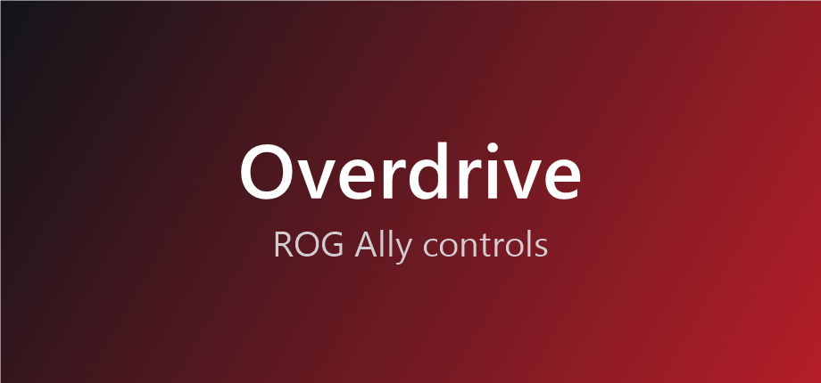

Overdrive
v0.2.1ROG Ally controls on Windows: performance modes with their own watts, Auto TDP, FPS limit, CPU and GPU fan curves, CPU Boost, Windows power mode and Auto SR. Controller, vibration and touch settings are in Traction. Unofficial; based on G-Helper. Needs Decky Loader for Windows.